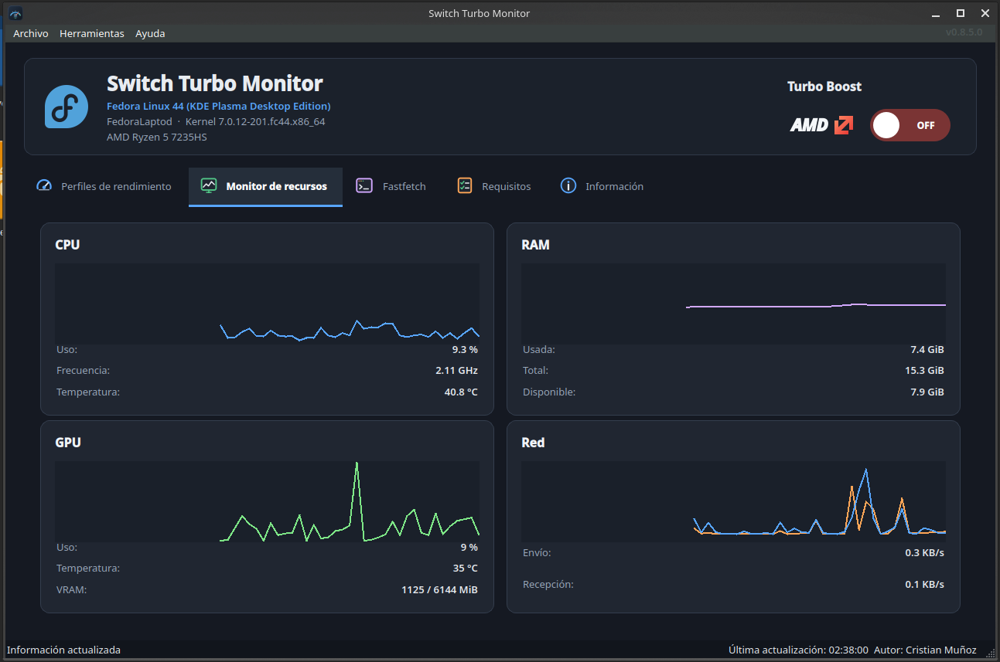
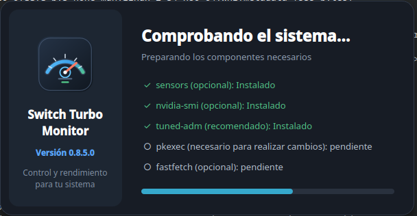
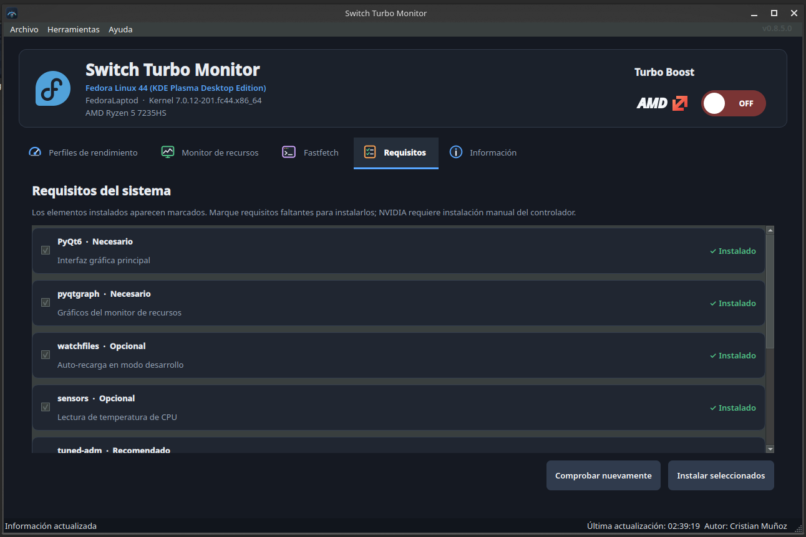
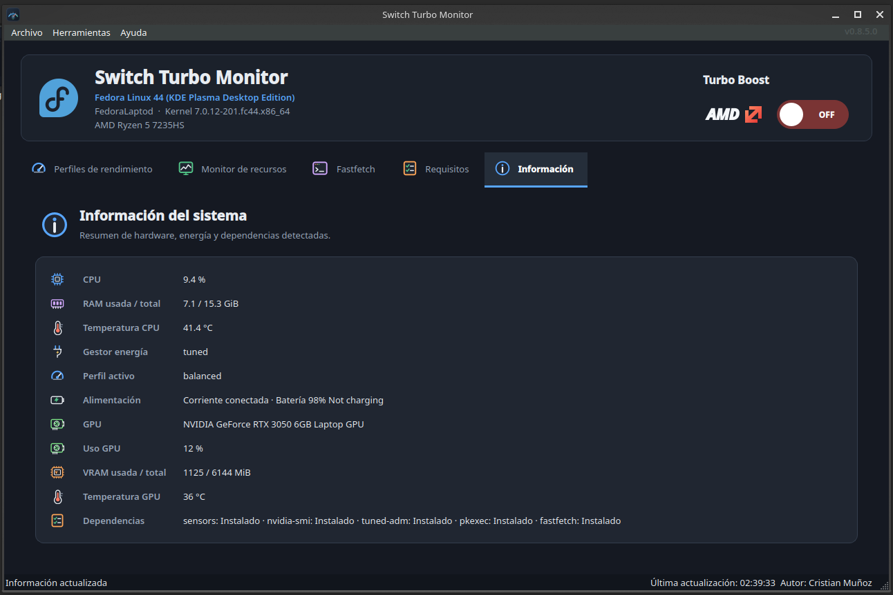

Switch Turbo Monitor nace para facilitar a usuarios de Fedora y Linux el cambio de perfiles de rendimiento y Turbo Boost desde una interfaz visual, evitando configuraciones complejas en la BIOS o una cadena de comandos difíciles de recordar.
El origen: una barrera demasiado alta
En muchos equipos, cambiar el comportamiento del procesador implica entrar a la BIOS o buscar comandos dispersos por Internet. Para un usuario experimentado puede ser una tarea breve. Para alguien que acaba de instalar Fedora, en cambio, significa reiniciar, navegar por opciones desconocidas y preguntarse si un cambio puede dejar el sistema en un estado no deseado.
Quise trasladar esa operación al escritorio y darle un contexto fácil de entender. Así apareció la primera idea: un interruptor gráfico para consultar y modificar Turbo Boost desde Fedora KDE. Con el tiempo quedó claro que el estado del procesador no cuenta toda la historia. También importan el perfil de energía activo, la temperatura, el consumo de memoria, la carga gráfica y las herramientas disponibles en el sistema.
El proyecto no busca esconder Linux: busca ofrecer una entrada segura para comprenderlo.
¿Qué problema resuelve?
Switch Turbo Monitor reúne en una sola ventana tareas que normalmente requieren varias herramientas. Permite activar o desactivar Turbo Boost en procesadores AMD e Intel compatibles, aplicar perfiles rápidos mediante tuned y consultar el estado del hardware sin tener que memorizar comandos.
El modo frío desactiva Turbo Boost e intenta utilizar un perfil equilibrado. El modo rendimiento hace lo contrario: activa Turbo Boost y selecciona un perfil orientado al rendimiento cuando está disponible. No son promesas mágicas de temperatura o velocidad; son atajos transparentes para configurar el sistema de acuerdo con el trabajo del momento.
La aplicación está dirigida principalmente a usuarios de Fedora KDE que quieren más control sin perderse en la terminal. También puede ser útil para quienes ya conocen Linux, pero prefieren tener diagnóstico, perfiles y monitorización en una interfaz única.

Cómo funciona, sin convertirlo en una caja negra
Al iniciarse, una pantalla de comprobación busca las herramientas que amplían sus funciones: sensors para temperaturas, nvidia-smi para GPU NVIDIA, tuned-adm para perfiles, fastfetch para el resumen del equipo y pkexec para las acciones que requieren autorización. Si falta un componente opcional, la aplicación lo informa y continúa funcionando.
El cambio de Turbo Boost se realiza sobre las interfaces que expone el kernel para AMD o Intel. Cuando es necesario escribir en ellas, la aplicación solicita autorización mediante PolicyKit y pkexec. No se ejecuta toda la interfaz como administrador, no se usa sudo internamente y no se almacenan contraseñas. Esa separación fue una decisión importante: una herramienta cómoda no debe pedir más privilegios de los que realmente necesita.
En paralelo, el monitor obtiene métricas de CPU, RAM, GPU y red. Las curvas temporales viven únicamente en memoria y pueden pausarse, ocultarse o actualizarse a otro intervalo. Fastfetch se ejecuta en segundo plano, de modo que una consulta externa no congele la ventana.


Las tecnologías detrás de la interfaz
El proyecto está escrito en Python 3. La interfaz utiliza PyQt6, elegida por su integración con el escritorio y porque permite construir una aplicación nativa y organizada en componentes. Las gráficas se dibujan con pyqtgraph, mientras que watchfiles facilita el ciclo de desarrollo con recarga automática.
Debajo de la interfaz conviven varias piezas propias del ecosistema Linux: las rutas sysfs del kernel para Turbo Boost, tuned para los perfiles de energía, PolicyKit para autorización, lm_sensors para temperatura y las utilidades de NVIDIA cuando están disponibles. La aplicación se divide en módulos de interfaz, energía, GPU, configuración, dependencias y control de instancia. Esa separación hace más sencillo probar una parte sin tener que alterar las demás.
Lo que aprendí al construirlo
El aprendizaje más importante fue que una interfaz sencilla exige muchas decisiones internas. Un botón de encendido parece trivial hasta que debe reconocer dos convenciones distintas del kernel, confirmar el resultado, explicar un error y seguir siendo seguro si falta una dependencia.
También aprendí a tratar las funciones opcionales como capacidades y no como obstáculos. Un equipo sin GPU NVIDIA o sin Fastfetch debe seguir teniendo una aplicación útil. Diseñar esa degradación progresiva mejoró tanto la experiencia como la estructura del código.
Otro desafío fue mantener la interfaz fluida mientras se consultan comandos y métricas. Limitar el historial, ejecutar tareas externas en segundo plano y permitir que el usuario controle el ritmo de actualización me hizo pensar en rendimiento no solo como potencia del procesador, sino también como calidad de la experiencia.
Codex como compañero de desarrollo
La inteligencia artificial, mediante Codex, me acompañó durante el proceso como asistente técnico. Me ayudó a ordenar ideas, dividir responsabilidades entre módulos, generar y revisar código, detectar casos que necesitaban mejor manejo de errores y mantener más clara la documentación.
Su aporte fue especialmente valioso para comparar alternativas y acelerar tareas repetitivas. Aun así, la dirección del proyecto, las pruebas sobre el equipo real y las decisiones sobre seguridad y experiencia de uso siguieron requiriendo criterio humano. La IA no sustituyó el aprendizaje: me permitió dedicar más tiempo a entender el problema, evaluar resultados y pulir la solución.
Camino a la versión 1.0
Switch Turbo Monitor se encuentra en desarrollo previo a la versión 1.0. Los próximos pasos apuntan a ampliar las pruebas en distintos equipos AMD e Intel, mejorar la detección de capacidades y simplificar todavía más la instalación. También quiero seguir puliendo la accesibilidad, los mensajes de diagnóstico y la integración con Fedora KDE.
A más largo plazo, el objetivo es convertir el proyecto en una herramienta estable y fácil de distribuir, sin abandonar su principio original: que el usuario sepa qué está cambiando, por qué se solicita autorización y cómo volver a un estado equilibrado.
